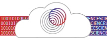
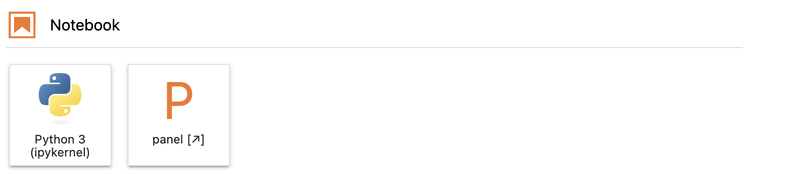
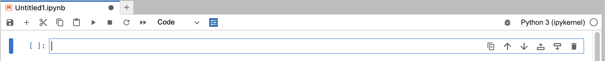

How to Notebook#

Welcome to the JupyterHub how-to notebook! This guide will help you start using Jupyter Notebooks on GeoLab. You’ll learn about the basic components of a notebook, how to perform essential operations, and best practices to make the most out of your Jupyter experience.
1. Getting Started: Understanding your NoteBook#
Jupyter Notebooks are an open-source web application that allows you to create and share documents that contain live code, equations, visualizations, and narrative text. They are widely used in data science, academic research, and machine learning for their versatility and ease of use.
Creating a New Notebook#
To create a new notebook, follow these steps:
Click on the
Newbutton on the top left of the dashboard.Select
Python 3(or the appropriate kernel) from the dropdown menu.

A new notebook will open in a new tab.
2. Notebook Interface Overview#
When you open a new notebook, you will see a toolbar at the top, a menu bar, and an empty cell.
Menu Bar: Contains various options like File, Edit, View, Insert, Cell, Kernel, Widgets, and Help.
Toolbar: Provides quick access to common actions such as saving, adding cells, cutting/pasting cells, running cells, etc.
Cells: The main content area where you write your code or text.

Cell Operations#
Running Cells: Cells can be run individually or in sequence using the “Run” button or keyboard shortcuts
(Shift + Enter).Adding Cells: New cells can be added above or below the current cell using the toolbar buttons or the
"Insert"menu.Deleting Cells: Cells can be deleted using the
"Cut"button or keyboard shortcuts(Esc + D + D).Reordering Cells: Cells can be moved up or down using the toolbar buttons or by dragging and dropping.
Try running the cell below to print a message:
# This is a code cell
print("Hello, GeoLab!")
Keyboard Shortcuts#
Jupyter Notebooks have several keyboard shortcuts to enhance productivity. Here are a few essential ones:
Shift + Enter: Run the current cell and move to the next one.Ctrl + Enter: Run the current cell and stay in the current cell.Esc + A: Insert a new cell above.Esc + B: Insert a new cell below.Esc + D, D: Delete the current cell.
For a complete list of shortcuts, go to the Help menu and select Keyboard Shortcuts.
Markdown Cells#
Markdown is a lightweight markup language that allows you to format text to properly document your code. Here are some basic Markdown elements:
Headings: Use
#for headings (e.g.,# Heading 1,## Heading 2,### Heading 3).Bold and Italics: Use
**bold**or__bold__for bold text, and*italic*or_italic_for italic text.Lists:
Unordered lists: Use
*,-, or+(e.g.,* Item 1,- Item 2).Ordered lists: Use numbers followed by a period (e.g.,
1. Item 1,2. Item 2).
Links:
[Link text](URL)Images:
Code: Inline code with backticks
`code`and code blocks with triple backticks
3. Saving and Exporting Notebooks#
To save your notebook, click the save icon (💾) in the toolbar or press Ctrl + S. Jupyter automatically saves your work periodically, but it’s a good habit to save manually.
Exporting Notebooks#
You can export your notebook to various formats like HTML, PDF, and more. To do this:
Go to the
Filemenu.Select
Download as.Choose your desired format (e.g.,
HTML (.html),PDF via LaTeX (.pdf)).
Collaborating with Notebooks & Github#
Using GitHub is a great way to collaborate on notebooks with others. Here’s how you can manage your notebooks using Git.
Cloning a Repository#
To work on an existing project, you need to clone the repository to your local environment. Use the following command to clone a repository:
!git clone https://github.com/your-repo.git
Replace https://github.com/your-repo.git with the URL of the repository you want to clone.
Pulling Changes#
To update your local repository with the latest changes from the remote repository, use the git pull command:
!git pull origin main
This command fetches and merges changes from the main branch of the remote repository. Adjust the branch name if you are working on a different branch.
Staging and Committing Changes#
To stage the changes you made, use the git add command:
!git add .
Next, commit the staged changes with a descriptive message:
!git commit -m "Your commit message"
Pushing Changes#
To upload your local changes to the remote repository, use the git push command:
!git push origin main
This command pushes your changes to the main branch of the remote repository. Adjust the branch name if you are working on a different branch.
4. Installing and Managing Packages/Environments#
Note: The current workflow for using the hub involves accessing the hub with the base image and then customizing it by adding your own packages and environments. This allows you to tailor the environment to your specific project needs.
You can install packages directly from within a Jupyter Notebook using the ! operator to run shell commands. Here are some common ways to install packages:
Using pip: The Python package installer.
!pip install package_name
Using conda The package manager from the Anaconda distribution.
!conda install package_name
Managing Environments with conda#
In addition to installing packages, conda can also be used to create and manage virtual environments. Virtual environments allow you to manage dependencies for different projects separately. Here are some common commands for managing environments with conda:
Create a new environment:
!conda create --name env_name
Replace env_name with the name of your new environment
Activate an environment:
!conda activate env_name
Deactivate the current environment:
!conda deactivate
List all environments:
!conda env list
Remove an environment:
!conda remove --name env_name --all
5. Accessing the Terminal#
Jupyter Notebooks provide an integrated terminal, allowing you to perform various command-line tasks directly from your Jupyter environment. This can be useful for managing files, installing packages, and running scripts.
Opening the Terminal#
To access the terminal in Jupyter Notebooks:
Navigate to the Jupyter Dashboard: This is the main page you see when you first log in to JupyterHub.
Open a New Terminal:
Click on the
Newbutton in the top right corner of the dashboard.Select
Terminalfrom the dropdown menu.
This will open a new terminal window in a new tab.
Using the Terminal#
Once the terminal is open, you can use it like any standard command-line interface. Here are some common tasks you might perform:
Navigating the File System:
ls # List files and directories cd # Change directory pwd # Print working directory
6. Best Practices#
Code Organization#
Modularize Your Code: Break down your code into small, reusable functions. This makes your code easier to understand, test, and maintain.
Separate Code and Text: Use Markdown cells to explain your code, document your process, and present your findings. This makes your notebook more readable.
Use Headings: Organize your notebook with headings and subheadings to create a clear structure. This helps readers follow your workflow.
Use Version Control: Integrate with version control systems like Git to track changes and collaborate with others.
Visualization#
Create Clear Visualizations: Use appropriate plots to visualize your data. Label your axes and provide a legend if needed.
Use Interactive Plots: Consider using interactive plotting libraries like Plotly for better interactivity.
import matplotlib.pyplot as plt
x = [1,2,3,4,5]
y = [1,2,3,4,5]
# Simple line plot
plt.plot(x, y)
plt.xlabel('X-axis label')
plt.ylabel('Y-axis label')
plt.title('Plot Title')
plt.legend(['Line 1'])
plt.show()
Cleaning Up#
Remove Unused Code: Delete any code that is not being used. This keeps your notebook clean and focused.
Restart and Run All: Before finalizing your notebook, restart the kernel and run all cells to ensure that everything runs correctly from start to finish.
7. Troubleshooting Common Issues#
Kernel Issues: Restart the kernel if you encounter unexpected behavior or errors.
Lost Work: Regularly save your work and consider using checkpoints.
Cell Output: Clear the output of cells if it becomes too large or cluttered.
Wrong Image: If issues persist make sure you are loaded into GeoLab with the correct image